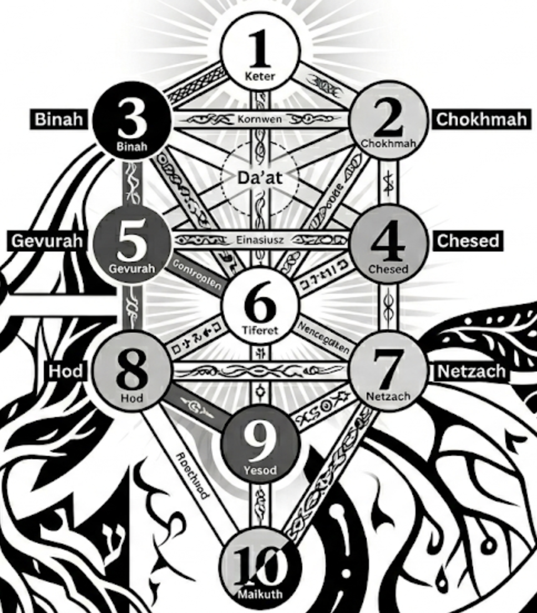

Numerologie:
| 1 | 2 | 3 | 4 | 5 | 6 | 7 | 8 | 9 |
|---|---|---|---|---|---|---|---|---|
| A | B | C | D | E | F | G | H | I |
| J | K | L | M | N | O | P | Q | R |
| S | T | U | V | W | X | Y | Z |
Zeigt, welche angeborenen Talente, Gaben und Charaktereigenschaften eine Person besitzt.
L U I S = 3 + 3 + 9 + 1 = 16 → 1 + 6 = 7
A N T O N I O = 1 + 5 + 2 + 6 + 5 + 9 + 6 = 34 → 3 + 4 = 7
G Á L V E Z = 7 + 1 + 3 + 4 + 5 + 8 = 28 → 2 + 8 = 10 → 1 + 0 = 1
B O M M E R = 2 + 6 + 4 + 4 + 5 + 9 = 30 → 3 + 0 = 3
Ausdruckszahl: 16 + 34 + 28 + 30 = 108 → 1 + 0 + 8 = 9
Zeigt mein inneres Wesen, meine wahren Wünsche.
Man nimmt nur die Vokale
L U I S → U = 3, I = 9 → Summe: 3 + 9 = 12 → 1 + 2 = 3
A N T O N I O → A = 1, O = 6, I = 9, O = 6 → Summe: 1 + 6 + 9 + 6 = 22 → 2 + 2 = 4
G Á L V E Z → A = 1, E = 5 → Summe: 1 + 5 = 6 → 6
B O M M E R → O = 6, E = 5 → Summe: 6 + 5 = 11 → 1 + 1 = 2
Herzenszahl: 3 + 4 + 6 + 2 = 15 → 1 + 5 = 6
Zeigt, wie man auf andere wirkt. Man nimmt nur die Konsonanten
L U I S → L = 3, S = 1 → Summe: 3 + 1 = 4 → 4
A N T O N I O → N = 5, T = 2, N = 5 → Summe: 5 + 2 + 5 = 12 → 1 + 2 = 3
G Á L V E Z → G = 7, L = 3, V = 4, Z = 8 → Summe: 7 + 3 + 4 + 8 = 22 → 2 + 2 = 4
B O M M E R → B = 2, M = 4, M = 4, R = 9 → Summe: 2 + 4 + 4 + 9 = 19 → 1 + 9 = 10 → 1 + 0 = 1
Persönlichkeitszahl: 4 + 3 + 4 + 1 = 12 → 1 + 2 = 3
18.07.1997 → 1+8+0+7+1+9+9+7 = 42 → 4+2 = 6
Die Lebenszahl 6 steht für Harmonie, Verantwortung, Fürsorglichkeit, Familie und Gemeinschaft.
Passt gut zu meinem Krebs-Sonne
Luis: "berühmter Krieger" (Stärke und Mut)
Antonio: "der Wertvolle, der Unschätzbare" (anti=gegen, onio=käuflich)
Galvez: Verbindung des Vornamen Galve mit der Endung -ez (Sohn von).
Galve ist die spanische Form des arabischen Namens Ghalib, der "der Sieger" oder "der Überwinder" bedeutet.
Es gab also einen Vorfahren, einen Stammvater, der den Namen Ghalib trug und als Sieger oder Überwinder bekannt war.
Warum gibt es diesen Namen im Spanischen?
In Spanien gab es eine lange Zeit der maurischen Herrschaft, die von 711 bis 1492 dauerte. Während dieser Zeit kamen viele arabische Namen und Wörter in die spanische Sprache und Kultur.
Die "Mauren" sind die muslimischen Eroberer und Bewohner Spaniens.
Wer war Ghalib ibn Abd al-Rahman?
Er war ein legendärer Feldherr des 10. Jahrhunderts im Kalifat von Cordoba.
Urpsrünglich war er ein Sklave osteuropäischer Herkunft (wahrscheinlich slawisch).
Er wurde vom Kalifen Abd al-Rahman III. freigelassen und stieg zum General auf, der viele Siege errang und die christlichen Königreiche im Norden Spaniens bekämpfte.
Bommer: Herkunft unklar, könnte bedeuten "derjenige, der in der Nähe eines Baumes wohnt" (vom mittelhochdeutschen "bome" für Baum) oder "derjenige, der mit einem Baum zu tun hat" (vom mittelhochdeutschen "bomen" für schlagen oder fällen).
Geburtsdatum: 18.07.1997
Lebenszahl = 1 + 8 + 0 + 7 + 1 + 9 + 9 + 7 = 42 → 4 + 2 = 6
Die Lebenszahl 6 entspricht der Sephira Tipheret auf dem kabbalistischen Lebensbaum, die für Schönheit, Harmonie, Mitgefühl und das Herz steht.
Ausdruckzahl = 9 --> Yesod
Yesod ist Intuition, Vorstellungskraft, Träume, Sensibilität und die Verbindung zwischen Innenwelt und Außenwelt
Herzenszahl = 6 --> Tipheret, meine Seelen-Sephira
Tipheret steht für Schönheit, Harmonie, Mitgefühl und das Herz. Es repräsentiert die zentrale Sephira, die das Gleichgewicht zwischen den oberen und unteren Sephiroth herstellt.
Persönlichkeitszahl = 3 --> Binah
Binah steht für Verständnis, Intelligenz
Zusammen:
Zentrum: Mein Kern, meine Seele, mein Lebensweg ist Tipheret (6)
Unterbewusstes: Meine verborgenen Talente, meine Intuition, meine Träume sind Yesod (9)
Ausdrucksweise: Mein Denken, Struktur und Asudruck werden von Binah (3) geprägt, der Sephira des Verständnisses und der Intelligenz.
